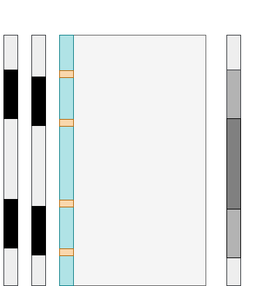

In addition to the modifications of already existing instructions which are part of the RISC-V I base ISA, RISC-ViO introduces several instructions as an interface between software and hardware regarding objects.
Those instructions are all part of the zhm extension.
Since RISC-ViO manages objects on the ISA level, the ISA has to provide a means to create new objects and their corresponding pointers.
This creation of ISA level objects is achieved by the alc-Instruction family which comes in four flavours.
The next section provides an short description with those instructions alongside their bit encodings.
The alc instruction is a variation of the alci instruction. In contrast to alci, the size of the new object is given by the content of register rs1.
Apart from the source of the object size, alc only differs from alci in that alc cannot be used to allocate a stack frame.
//trivia about how accesses beyond stack frames are bad//
In order to protect the stack frame of a function from modification by other functions, RISC-ViO introduces a scheme to protect these frames.
This requires access management for those frames, which RISC-ViO implements in form of adding colour tags to both the sp as well as the ra register.
By updating those colours at critical points such as function entries and frame allocations, the processor always knows whether the stack frame pointed to by the
sp register is owned by the currently executed function.
This state is called "regular", while the current function not being the owner of the current stack frame is denoted as the "irregular" state.
For sp as well as for ra, there are two colours: black and white. Those colours are an integral part of those registers and cannot be read or modified seperately from their registers.
Also, when storing/loading ra or sp using sw/lw, the colour is also stored/retrieved to/from the given memory location.
An overview of the transition between those colours is given in Figure 1.
On every function entry, the processor flips the colour of ra from white to black or vice-versa. For sp, this takes place on every stack frame allocation.
Whether the processor is currently in the regular state is given by the equality of the colours of ra and sp.
If the colours of sp and ra both were black for example, the processor would be in the regular state.
Colour transitions
Figure 2 provides two sample program flows for which the colour and therefore state transitions are shown.
Figure 2a) shows the behaviour of the colour mechanism during the execution of a correct stream of instructions while figure 2b) highlights how this mechanism catches bad program behaviour and the subsequent raising of the StateException.
State transitions for examplatory instruction streams

a) Transitions during normal program flow
b) Transitions during abnormal program flow with exception